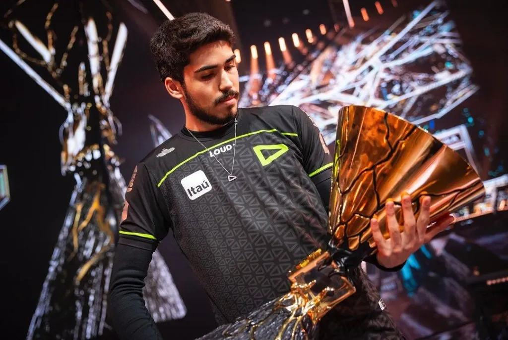

Aspas
Overview
Erik "Aspas"Santos es un jugador profesional brasilero el cual actualmente forma parte de Leviatan.
- Configuración de Mouse:
- Periféricos
LEV Aspas

- Información del jugador
Erik "Aspas"Santos es un jugador profesional brasilero el cual actualmente forma parte de Leviatan.